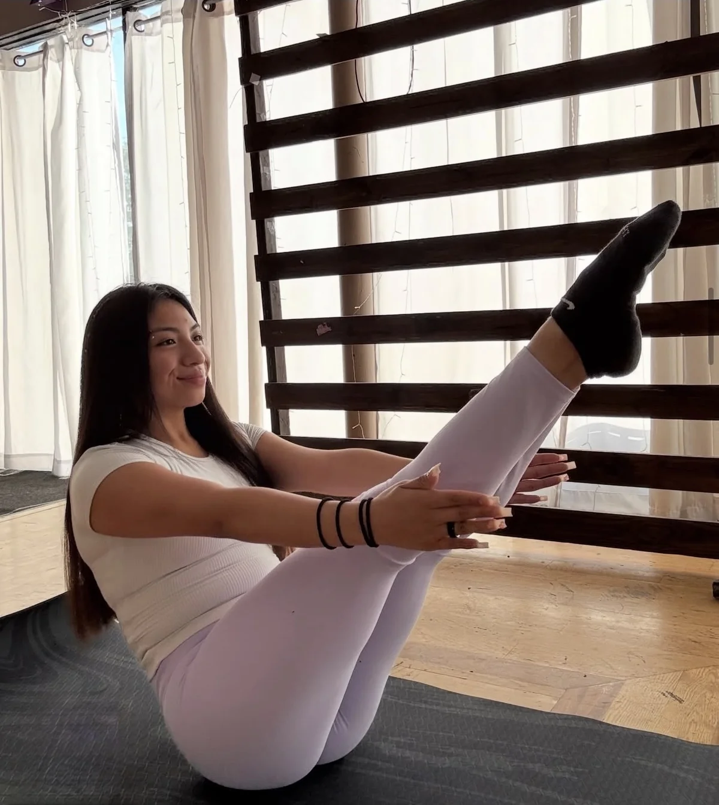

Pilates · Villa Park & Chicagoland
Nataly Vargas
Explore mat Pilates at FOCUS in Villa Park and Nataly’s private reformer inquiries through her own website. Her profile also lists studio connections in Oak Park, Berwyn, and Chicago.
Meet Nataly Vargas →